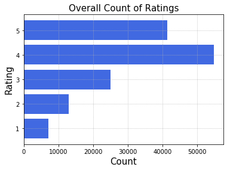
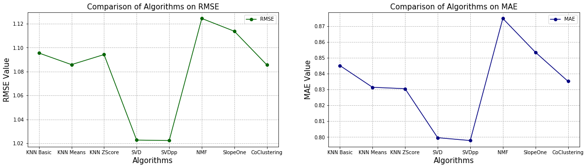
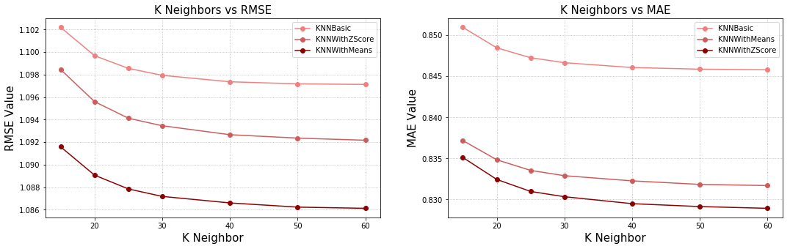

Evaluation of Recommender Algorithms in Surprise on Yelp Ratings
Introduction
For evaluation, I mainly used review.csv file, it has totally 1.4 million ratings given by users for business categories. It had a total of around 436 unique business categories which are restaurant cuisines. The data is clean and ready for use.
Code
Import Libraries
# Imports
import pandas as pd
import matplotlib.pyplot as plt
%matplotlib inline
from surprise import Dataset
from surprise import Reader
from surprise.model_selection import cross_validate
from surprise.model_selection import GridSearchCV
from surprise import KNNBasic, KNNWithMeans, KNNWithZScore
from surprise import SVD, SVDpp, NMF
from surprise import SlopeOne, CoClustering
Load Review Ratings Data
# Load review ratings and verify data
reviews = pd.read_csv('./yelp-core5/review.csv', names=['userID', 'businessID', 'rating'])
print('Rows:', reviews.shape[0], '; Columns:', reviews.shape[1], '\n')
reviews.head()
Rows: 141454 ; Columns: 3
| userID | businessID | rating | |
|---|---|---|---|
| 0 | 10000 | 0 | 5 |
| 1 | 10001 | 1 | 5 |
| 2 | 10002 | 2 | 5 |
| 3 | 10003 | 3 | 4 |
| 4 | 10004 | 4 | 5 |
Basic Stats of Review Ratings
reviews.describe()
| userID | businessID | rating | |
|---|---|---|---|
| count | 141454.000000 | 141454.000000 | 141454.000000 |
| mean | 12568.830164 | 1564.806538 | 3.778097 |
| std | 2189.783991 | 1314.985956 | 1.116191 |
| min | 10000.000000 | 0.000000 | 1.000000 |
| 25% | 10704.000000 | 467.000000 | 3.000000 |
| 50% | 11902.000000 | 1185.000000 | 4.000000 |
| 75% | 14067.000000 | 2393.000000 | 5.000000 |
| max | 18042.000000 | 5198.000000 | 5.000000 |
Unique Counts
print('No. of Unique Users :', reviews.userID.nunique())
print('No. of Unique Business :', reviews.businessID.nunique())
print('No. of Unique Ratings :', reviews.rating.nunique())
No. of Unique Users : 8043
No. of Unique Business : 5199
No. of Unique Ratings : 5
Overall Count of Ratings given by Users
rts_gp = reviews.groupby(by=['rating']).agg({'userID': 'count'}).reset_index()
rts_gp.columns = ['Rating', 'Count']
plt.barh(rts_gp.Rating, rts_gp.Count, color='royalblue')
plt.title('Overall Count of Ratings', fontsize=15)
plt.xlabel('Count', fontsize=15)
plt.ylabel('Rating', fontsize=15)
plt.grid(ls='dotted')
plt.show()

Reload Data with 1-5 Rating Scale
# Set Rating Scale
reader = Reader(rating_scale=(1, 5))
# Load data with rating scale
data = Dataset.load_from_df(reviews[['userID', 'businessID', 'rating']], reader)
Evaluation with various Algorithms available in Surprise
k-NN Based Algorithms
KNNBasic, KNNWithMeans and KNNWithZScore
Matrix Factorization Based Algorithms
SVD, SVDpp and NMF
Other Collaborative Filtering Algorithms
SlopeOne
CoClustering
Cross Validation: 5-Fold
Optimization Metric: RMSE, MAE
Multithreading: 5 Threads
k-NN Based Algorithms
knnbasic_cv = cross_validate(KNNBasic(), data, cv=5, n_jobs=5, verbose=False)
knnmeans_cv = cross_validate(KNNWithMeans(), data, cv=5, n_jobs=5, verbose=False)
knnz_cv = cross_validate(KNNWithZScore(), data, cv=5, n_jobs=5, verbose=False)
Computing the msd similarity matrix...
Computing the msd similarity matrix...
Computing the msd similarity matrix...
Computing the msd similarity matrix...
Computing the msd similarity matrix...
Done computing similarity matrix.
Done computing similarity matrix.
Done computing similarity matrix.
Done computing similarity matrix.
Done computing similarity matrix.
Computing the msd similarity matrix...
Computing the msd similarity matrix...
Computing the msd similarity matrix...
Computing the msd similarity matrix...
Computing the msd similarity matrix...
Done computing similarity matrix.
Done computing similarity matrix.
Done computing similarity matrix.
Done computing similarity matrix.
Done computing similarity matrix.
Computing the msd similarity matrix...
Computing the msd similarity matrix...
Computing the msd similarity matrix...
Computing the msd similarity matrix...
Computing the msd similarity matrix...
Done computing similarity matrix.
Done computing similarity matrix.
Done computing similarity matrix.
Done computing similarity matrix.
Done computing similarity matrix.
Matrix Factorization Based Algorithms
svd_cv = cross_validate(SVD(), data, cv=5, n_jobs=5, verbose=False)
svdpp_cv = cross_validate(SVDpp(), data, cv=5, n_jobs=5, verbose=False)
nmf_cv = cross_validate(NMF(), data, cv=5, n_jobs=5, verbose=False)
Other Collaborative Filtering Algorithms
slope_cv = cross_validate(SlopeOne(), data, cv=5, n_jobs=5, verbose=False)
coclus_cv = cross_validate(CoClustering(), data, cv=5, n_jobs=5, verbose=False)
Comparison of all algorithms on RMSE and MAE
print('Algorithm\t RMSE\t\t MAE')
print()
print('KNN Basic', '\t', round(knnbasic_cv['test_rmse'].mean(), 4), '\t', round(knnbasic_cv['test_mae'].mean(), 4))
print('KNN Means', '\t', round(knnmeans_cv['test_rmse'].mean(), 4), '\t', round(knnmeans_cv['test_mae'].mean(), 4))
print('KNN ZScore', '\t', round(knnz_cv['test_rmse'].mean(), 4), '\t', round(knnz_cv['test_mae'].mean(), 4))
print()
print('SVD', '\t\t', round(svd_cv['test_rmse'].mean(), 4), '\t', round(svd_cv['test_mae'].mean(), 4))
print('SVDpp', '\t\t', round(svdpp_cv['test_rmse'].mean(), 4), '\t', round(svdpp_cv['test_mae'].mean(), 4))
print('NMF', '\t\t', round(nmf_cv['test_rmse'].mean(), 4), '\t', round(nmf_cv['test_mae'].mean(), 4))
print()
print('SlopeOne', '\t', round(slope_cv['test_rmse'].mean(), 4), '\t', round(slope_cv['test_mae'].mean(), 4))
print('CoClustering', '\t', round(coclus_cv['test_rmse'].mean(), 4), '\t', round(coclus_cv['test_mae'].mean(), 4))
print()
Algorithm RMSE MAE
KNN Basic 1.0955 0.8451
KNN Means 1.0858 0.8314
KNN ZScore 1.0942 0.8305
SVD 1.0227 0.7996
SVDpp 1.0223 0.7978
NMF 1.1244 0.8748
SlopeOne 1.1137 0.8535
CoClustering 1.0855 0.8352
x_algo = ['KNN Basic', 'KNN Means', 'KNN ZScore', 'SVD', 'SVDpp', 'NMF', 'SlopeOne', 'CoClustering']
all_algos_cv = [knnbasic_cv, knnmeans_cv, knnz_cv, svd_cv, svdpp_cv, nmf_cv, slope_cv, coclus_cv]
rmse_cv = [round(res['test_rmse'].mean(), 4) for res in all_algos_cv]
mae_cv = [round(res['test_mae'].mean(), 4) for res in all_algos_cv]
plt.figure(figsize=(20,5))
plt.subplot(1, 2, 1)
plt.title('Comparison of Algorithms on RMSE', loc='center', fontsize=15)
plt.plot(x_algo, rmse_cv, label='RMSE', color='darkgreen', marker='o')
plt.xlabel('Algorithms', fontsize=15)
plt.ylabel('RMSE Value', fontsize=15)
plt.legend()
plt.grid(ls='dashed')
plt.subplot(1, 2, 2)
plt.title('Comparison of Algorithms on MAE', loc='center', fontsize=15)
plt.plot(x_algo, mae_cv, label='MAE', color='navy', marker='o')
plt.xlabel('Algorithms', fontsize=15)
plt.ylabel('MAE Value', fontsize=15)
plt.legend()
plt.grid(ls='dashed')
plt.show()

Evaluation Results
- Winner: SVDpp (best RMSE and MAE)
- 2nd place: SVD
- 3rd place: KNN Means
Group Winners
k-NN
- KNN Means
Matrix Factorization
- SVDpp
Others
- CoClustering
Perform GridSearch CV on top three algorithms - SVDpp, SVD and KNN
Let’s try tweaking parameters on SVDpp, SVD using GridSearchCV
# Parameter space
svd_param_grid = {'n_epochs': [20, 25],
'lr_all': [0.007, 0.009, 0.01],
'reg_all': [0.4, 0.6]}
svdpp_gs = GridSearchCV(SVDpp, svd_param_grid, measures=['rmse', 'mae'], cv=5, n_jobs=5)
svdpp_gs.fit(data)
svd_gs = GridSearchCV(SVD, svd_param_grid, measures=['rmse', 'mae'], cv=5, n_jobs=5)
svd_gs.fit(data)
print('SVDpp - RMSE:', round(svdpp_gs.best_score['rmse'], 4), '; MAE:', round(svdpp_gs.best_score['mae'], 4))
print('SVD - RMSE:', round(svd_gs.best_score['rmse'], 4), '; MAE:', round(svd_gs.best_score['mae'], 4))
SVDpp - RMSE: 1.0156 ; MAE: 0.7945
SVD - RMSE: 1.0161 ; MAE: 0.7947
After tuning the parameters, we have bet the best results from cross_validate() method of SVD and SVDpp
SVDpp Best Parameters
print('RMSE =', svdpp_gs.best_params['rmse'])
print('MAE =', svdpp_gs.best_params['mae'])
RMSE = {'n_epochs': 25, 'lr_all': 0.007, 'reg_all': 0.4}
MAE = {'n_epochs': 25, 'lr_all': 0.01, 'reg_all': 0.4}
SVD Best Parameters
print('RMSE =', svd_gs.best_params['rmse'])
print('MAE =', svd_gs.best_params['mae'])
RMSE = {'n_epochs': 20, 'lr_all': 0.009, 'reg_all': 0.4}
MAE = {'n_epochs': 25, 'lr_all': 0.01, 'reg_all': 0.4}
Tweak parameters on KNN using GridSearchCV
param_grid = {'k': [15, 20, 25, 30, 40, 50, 60]}
knnbasic_gs = GridSearchCV(KNNBasic, param_grid, measures=['rmse', 'mae'], cv=5, n_jobs=5)
knnbasic_gs.fit(data)
knnmeans_gs = GridSearchCV(KNNWithMeans, param_grid, measures=['rmse', 'mae'], cv=5, n_jobs=5)
knnmeans_gs.fit(data)
knnz_gs = GridSearchCV(KNNWithZScore, param_grid, measures=['rmse', 'mae'], cv=5, n_jobs=5)
knnz_gs.fit(data)
Computing the msd similarity matrix...
Computing the msd similarity matrix...
Computing the msd similarity matrix...
Computing the msd similarity matrix...
Computing the msd similarity matrix...
Done computing similarity matrix.
Done computing similarity matrix.
Done computing similarity matrix.
Done computing similarity matrix.
Done computing similarity matrix.
Computing the msd similarity matrix...
Computing the msd similarity matrix...
Computing the msd similarity matrix...
Computing the msd similarity matrix...
Computing the msd similarity matrix...
Done computing similarity matrix.
Done computing similarity matrix.
Done computing similarity matrix.
Done computing similarity matrix.
Done computing similarity matrix.
Computing the msd similarity matrix...
Computing the msd similarity matrix...
Computing the msd similarity matrix...
Computing the msd similarity matrix...
Computing the msd similarity matrix...
Done computing similarity matrix.
Done computing similarity matrix.
Done computing similarity matrix.
Done computing similarity matrix.
Done computing similarity matrix.
Computing the msd similarity matrix...
Computing the msd similarity matrix...
Computing the msd similarity matrix...
Computing the msd similarity matrix...
Computing the msd similarity matrix...
Done computing similarity matrix.
Done computing similarity matrix.
Done computing similarity matrix.
Done computing similarity matrix.
Done computing similarity matrix.
x = [15, 20, 25, 30, 40, 50, 60]
y1 = knnbasic_gs.cv_results['mean_test_rmse']
y2 = knnbasic_gs.cv_results['mean_test_mae']
y3 = knnmeans_gs.cv_results['mean_test_rmse']
y4 = knnmeans_gs.cv_results['mean_test_mae']
y5 = knnz_gs.cv_results['mean_test_rmse']
y6 = knnz_gs.cv_results['mean_test_mae']
plt.figure(figsize=(18,5))
plt.subplot(1, 2, 1)
plt.title('K Neighbors vs RMSE', loc='center', fontsize=15)
plt.plot(x, y1, label='KNNBasic', color='lightcoral', marker='o')
plt.plot(x, y5, label='KNNWithZScore', color='indianred', marker='o')
plt.plot(x, y3, label='KNNWithMeans', color='darkred', marker='o')
plt.xlabel('K Neighbor', fontsize=15)
plt.ylabel('RMSE Value', fontsize=15)
plt.legend()
plt.grid(ls='dotted')
plt.subplot(1, 2, 2)
plt.title('K Neighbors vs MAE', loc='center', fontsize=15)
plt.plot(x, y2, label='KNNBasic', color='lightcoral', marker='o')
plt.plot(x, y4, label='KNNWithMeans', color='indianred', marker='o')
plt.plot(x, y6, label='KNNWithZScore', color='darkred', marker='o')
plt.xlabel('K Neighbor', fontsize=15)
plt.ylabel('MAE Value', fontsize=15)
plt.legend()
plt.grid(ls='dotted')
plt.show()

Evaluated Models:
kNN Basic, kNN Means, kNN ZScore, SVD, SVDpp, NMF, SlopeOne, CoClustering
Final Best Model:
SVD++ with parameters => Number of Epochs = 20, Learning Rate= 0.009, Regularization Term = 0.4
References:
- http://surpriselib.com/
- http://surprise.readthedocs.io/en/stable/getting_started.html